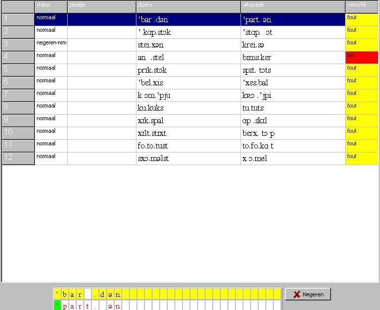
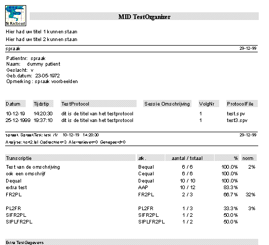
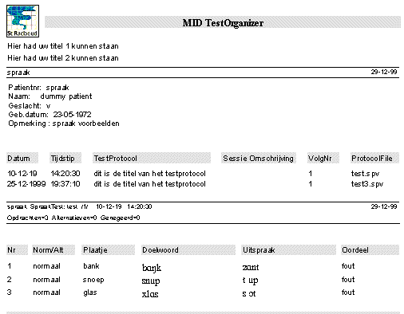

Rapport
& Analyse 
Nadat de uitspraak van elk doelwoord is
ingegegeven (en eventueel bepaalde doelwoorden gemarkeerd zijn als "negeren"),
kan een analyse worden uitgevoerd en kunnen
de resultaten van deze analyse worden afgedrukt in een rapport.
De analyse en rapport functie kan op 2
manieren worden uitgevoerd:
-
via het hoofdmenu van MidOrg (knop Print),
kan een totaal rapport van alle (gewenste) testafnamen van deze
patiënt in een keer worden uitgevoerd.
-
via BeKijken van een afgenomen test, kan via
de knop Analyse een sub-rapport van (enkel) deze test worden gemaakt.
Voor de analyse wordt gebruik gemaakt van
de default analyse-regels behorend bij dit testprotocol. In de speciale
onderzoeksmode kan ieder gewenst analyse-protocol worden gebruikt.
| Status |
|
| normaal |
het eerste plaatje is benoemd en telt
mee in de beoordeling |
| alternatief |
het tweede plaatje is benoemd en telt
mee in de beoordeling |
| negeren-nrm |
het eerste plaatje is benoemd, maar moet
genegeerd worden in de beoordeling |
| negeren-alt |
het tweede plaatje is benoemd, maar moet
genegeerd worden in de beoordeling |

Niet-Standaard
Analyse
Door het programma op te starten in de
speciale onderzoekers-mode, kan bij de generatie van een sub-rapport gekozen
worden welke analyse-regels worden gebruikt. Tevens bevat deze programma-modus,
hulpmiddelen voor de syntactische controle van de gekozen analyse-regels.
Standaard
Rapport
Middels de knop rapport kan een volledig
rapport, zoals hieronder afgebeeld, worden afgedrukt.

Lijst
met Fouten
Via de knop Lijst kan een volledige lijst
met fouten worden afgedrukt (zie hieronder)

© Copyright Instrumentele Dienst, 1999
 SM, last updated 29-12-1999
SM, last updated 29-12-1999